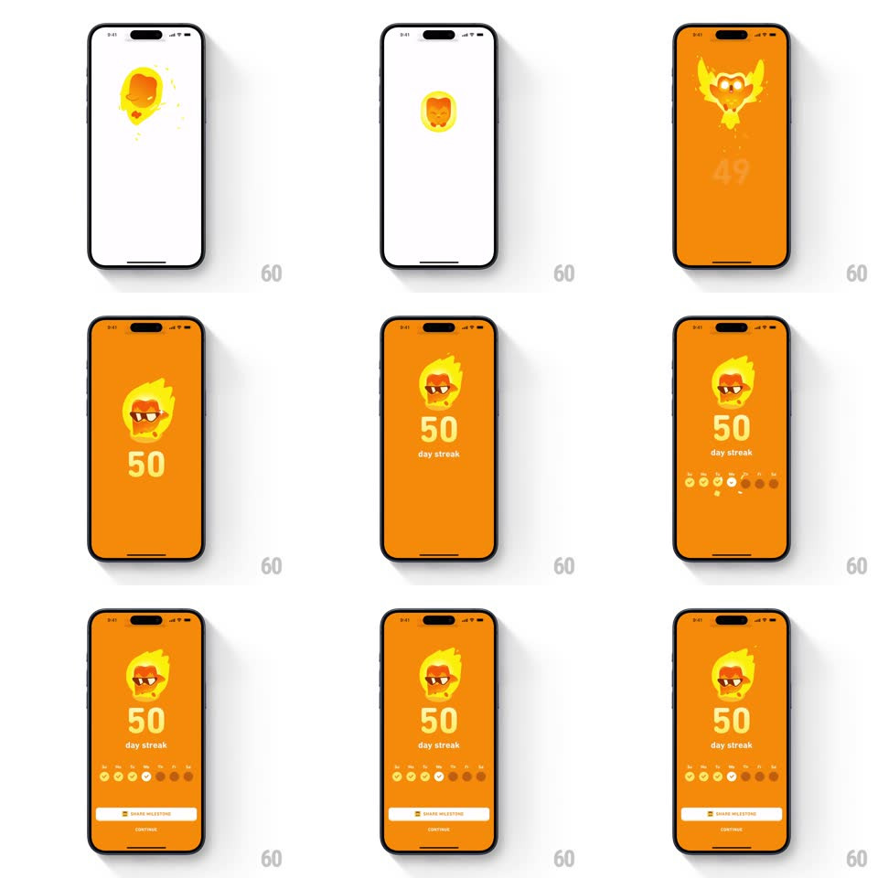

Media
Frame-by-frame

Rebuild this animation 1:1: Duolingo's 50-day streak milestone - Duo erupts out of the flame in a fiery burst, the counter ticks rapidly 49 to 50, and the week dots stagger in above SHARE MILESTONE and CONTINUE.

Rebuild this animation 1:1: Duolingo's 50-day streak milestone - Duo erupts out of the flame in a fiery burst, the counter ticks rapidly 49 to 50, and the week dots stagger in above SHARE MILESTONE and CONTINUE. ## Integration Integration: stack-agnostic spec - springs given as stiffness/damping, timed motions as duration + curve; map every value to your framework and animation library of choice. ## Scene Orange full-screen celebration: Duo (wearing sunglasses) bursting out of a giant flame with wings of fire, over "50" and "day streak", a row of seven week-day dots, a SHARE MILESTONE pill, and CONTINUE. ## Motion spec Pattern: mascot burst milestone, ~2.2s. - Burst: the flame swells (scale 1 -> 1.3, 250ms) then explodes into radiating fire shapes as Duo shoots out with a spin (rotate 360deg, spring ~380/16, 500ms) and settles over the flame. - Ticker: the number spins rapidly from 49 to 50 (digit roll, 400ms) and pops (scale 1.2 -> 1, spring ~420/18). - "day streak" fades in; ember particles drift upward (12, looping). - Week dots: the seven dots stagger in (60ms apart, scale 0 -> 1, spring ~440/18), the first five filling with checks, the rest staying hollow. - Buttons: SHARE MILESTONE and CONTINUE slide up staggered (300ms each, +100ms apart). ## Calibration - Duo's burst covers the number briefly - the ticker starts as he clears it. - The embers loop gently after the burst; the screen never goes static. ## Reduced motion Duo, count, and dots fade in (300ms). ## Don't miss - Duo wears sunglasses and keeps them through the burst. - The week dots check off only the days already passed - five, not seven.